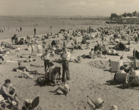

High Days and Holidays
The following story was written by Christina Byrne and published in Before Man Reached the Moon. Stories, articles and poems by members and friends of Helensburgh Writing Circle, 2008. Many thanks to Christina’s family for letting us include her story on our website.
Legend has it that every family rented a house for the two weeks of ‘The Fair’ and went off to Rothesay, Dunoon or Saltcoats. Sounds great, but not everyone could afford that in my street. Our holiday was a day trip to Portobello. For weeks beforehand everybody’s mammy put by the odd bob or two. Buses were booked; weans dredged up tin pails and spades from last year’s trip; shops did hot trade in Blanco to ensure sandshoes were whiter than white. On the fateful Sunday, three coaches drew up at the crack of dawn, lists were flourished and names ticked off. If you failed to appear in time – tough, they left without you. Getting to the East coast was part of the thrill as the bus chugged through Glasgow, then every village and town before reaching Edinburgh. The M8 did not exist so the journey took a while allowing for comfort stops where the business was done behind hedges or dykes. Could you hold up motorway traffic today while fifty weans went for a pee? Massive cheers rocked the bus when we got the first glimpse of the sea. An avalanche of kids poured out and tore down to the prom, stripping off socks and sannies as they ran, taking the concrete steps two at a time until they got to the SAND! Mammy negotiated the ramp with pram and baby, and Da struggled with the big box of ‘pieces’, billy cans, spirit stove and the all-important matches. Some folk had to make do with a fire, but then they had the advantage of roasting spuds in the embers. On occasions there was the ritual of ‘high tea’. We drooled over battered deep-fried haddock, chips with lashings of vinegar, bread and butter and the mammoth pot of tea. Portobello had an indoor swimming pool – ‘The Baths’ – but who wanted to go there when the outdoor pool enticed us? Wavelets sparkled in the summer sun, beguiling the unwary with the promise of a warm leisurely swim. Splash! Ouch! Think of Arctic waters, ice splinters, hypothermia! The hand-knitted or shop-bought bathing costumes stretched when wet and many a maiden blushed when gravity and sodden wool flashed the odd nipple. Males were subjected to shouts of ‘droopy drawers’. All the faithers made for the nearest hotel. Licensing laws dictated that only bona fide travellers were allowed a drink on a Sunday. Being fifty-odd miles from home, they fell within the category – and didn’t fall out of the hostelry until closing time. Sand castle competitions, crunching sweet sticky Portobello rock and watching folk unfold treacherous deckchairs kept us entertained. If we got bored we joined in the singalong with the open-air Band of Hope meeting.

The ‘shows’ were always there with the waltzer, dodgem cars, carousel and the chair-o-planes. The big steam boat swung up and down, up and down, churning stomachs bloated with candy floss, double nougats and greasy chips. It’s possible to be seasick without going to sea. When the sun went down, the last pokey hat was licked and fish suppers bought for the journey home. By this time, the whole month’s sweetie coupons were spent, weans were girning, maws were crabbit and paws were happy drunk. Pails of live ‘wulks’ lurked under every seat of the bus. The street bus run was all the holiday we got but every minute was savoured, digested and lovingly filed away. Its treasured memories kept us going until the anticipation began to build up for the next year’s trip.